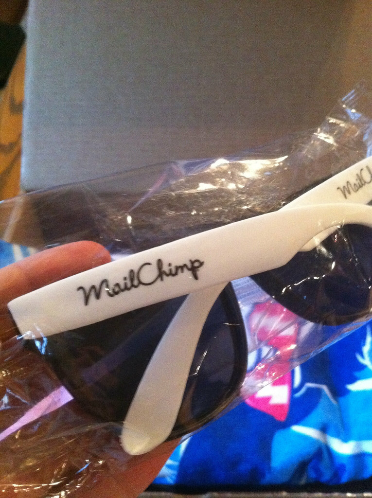
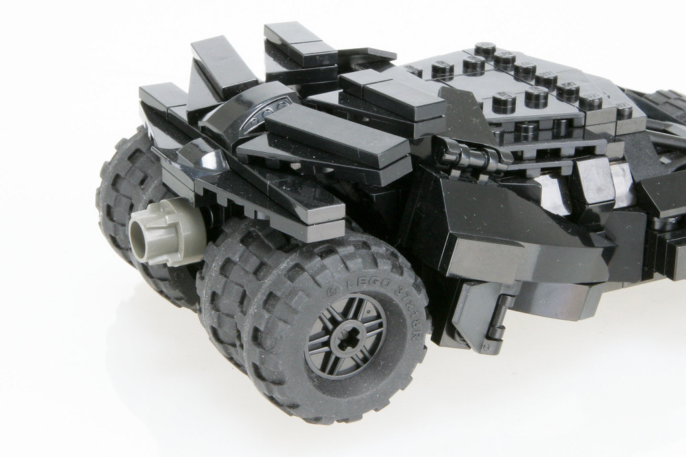
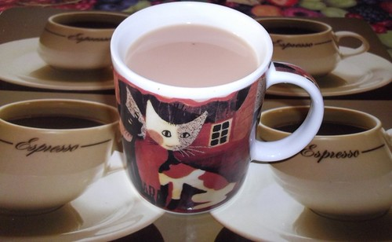

【2026年】お中元のお返し5選｜上司・親戚・取引先に喜ばれる夏のお礼ギフト

お中元をいただいたら、まずは感謝の気持ちをきちんと伝えたいもの。お返しを贈る場合も、相手との関係や相場に合わせて選ぶことが大切です。
この記事では、お中元のお返しの相場やマナーを解説し、上司、親戚、取引先に喜ばれるプレゼント5選を紹介します。
お中元のお返しの相場とマナー
本来、お中元は日頃の感謝を伝えるご挨拶であり、いただいたお返しは必須ではありません。まずは受け取ってから3日〜1週間以内に「お礼状」で感謝を伝えるのが基本のマナーです。その上でお返しの品を贈るなら、いただいた品物の「半額〜同額程度」が目安になります。
相場の例としては、3,000円のお中元には1,500〜3,000円程度、5,000円のお中元には3,000〜5,000円程度が無難です。高価すぎる返礼はかえって相手に気を遣わせるため避けましょう。のしの表書きは「御礼」、時期が立秋(8月7日頃)を過ぎたら「残暑御見舞」とするのが正しい使い分けです。



上司や取引先に喜ばれるプレゼント
上司や取引先には、高級感のあるプレゼントが喜ばれます。例えば、ビールの飲み比べギフトセット(アサヒ・サッポロ)や、上質なジュース・ゼリーの詰め合わせ(カゴメ・銀座千疋屋)などです。
また、形に残る実用的なお返しとして、名入れタンブラー・グラス(サーモス・スタンレー)なども喜ばれます。のしや包装のマナーを守ることも大切です。
親戚に喜ばれるプレゼント
親戚には、温かい気持ちを伝えるプレゼントが喜ばれます。例えば、焼き菓子・洋菓子の詰め合わせ(ヨックモック・ゴディバ)や、紅茶・コーヒーのギフト(リプトン・AGF)などです。
また、果実ゼリーやそうめんなど、夏らしく日持ちのする品も親戚へのお返しとして喜ばれます。
夏のお礼ギフトの選び方
夏のお礼ギフトの選び方としては、贈る相手の趣味や好みを考慮し、実用的なプレゼントを選ぶことが重要です。
また、プレゼントの価格やマナーも重要です。
「結局どれにしよう」と迷ったら。
相手・予算・シーンを選ぶだけで、編集部が実際に喜ばれたギフトに絞り込みます。
まとめ
夏のお礼ギフトの選び方としては、贈る相手の趣味や好みを考慮し、実用的なプレゼントを選ぶことが重要です。
プレゼントの価格やマナーも重要です。上司や取引先には高級感のあるプレゼントが喜ばれますが、親戚には温かい気持ちを伝えるプレゼントが喜ばれます。